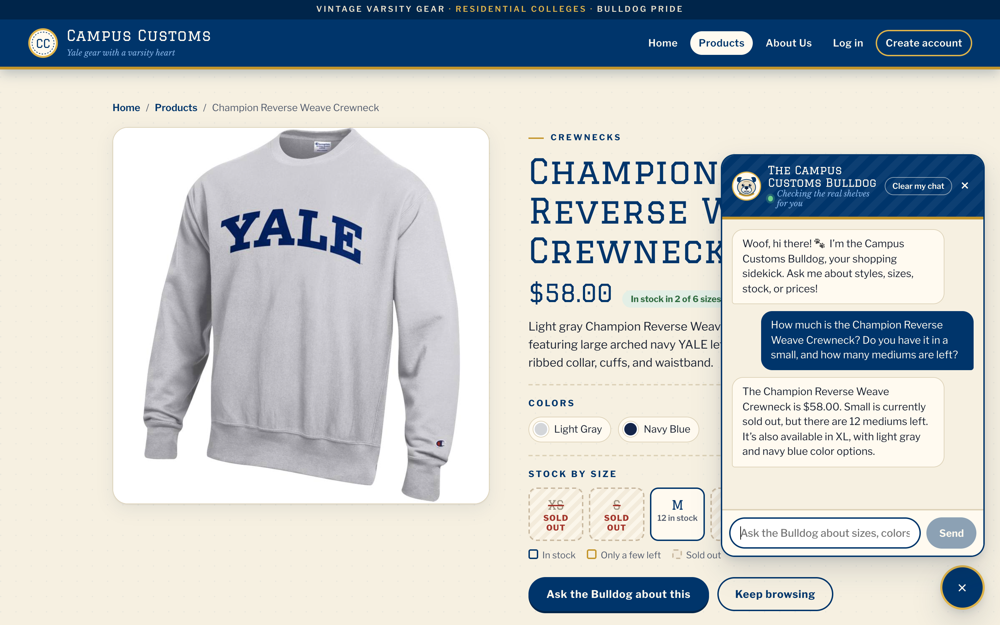
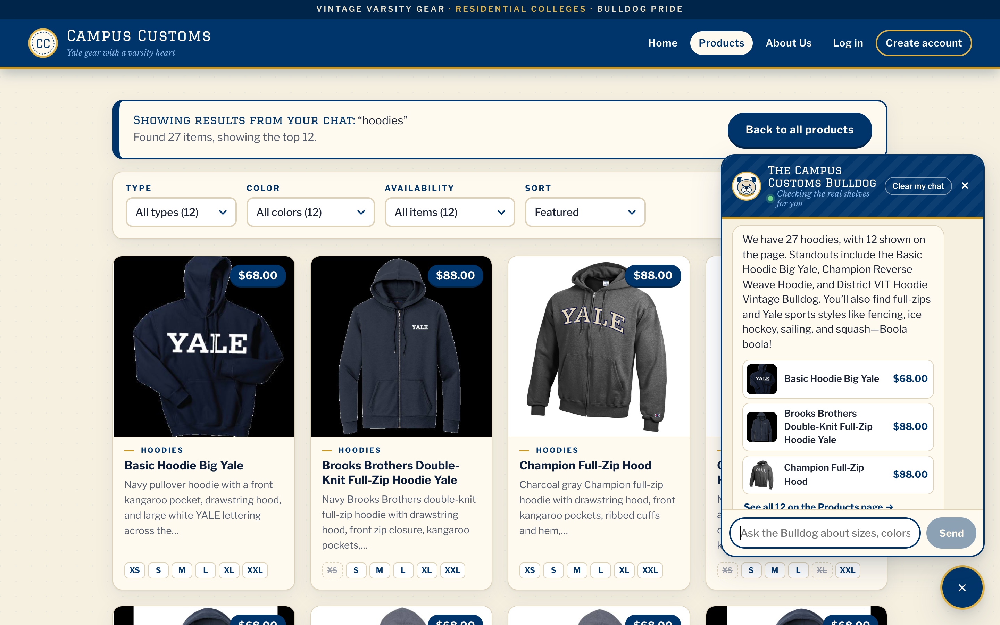
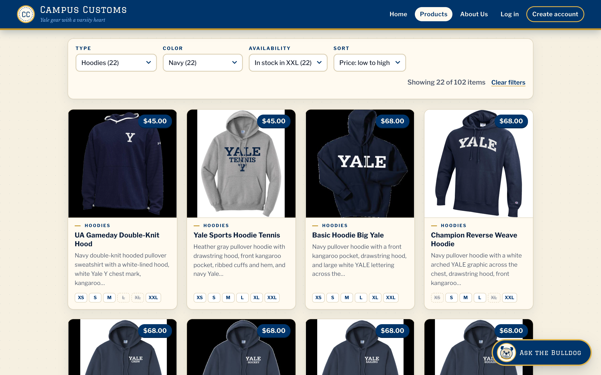

Chat checks the inventory of an item, including a sold-out size

On the Champion Reverse Weave Crewneck page, a guest asked: “How much is the Champion Reverse Weave Crewneck? Do you have it in a small, and how many mediums are left?” The chatbot looked the item up in the database and answered honestly: $58.00, Small is sold out, 12 mediums left, also available in XL. The size board behind the chat shows the same thing (S “Sold out”, M “12 in stock”).
| On screen | Database (catalogue + inventory) | Match |
|---|---|---|
| Price $58.00 | price = 58.0 | ✓ |
| Small is sold out | S = 0 | ✓ |
| 12 mediums left | M = 12 | ✓ |
| Also available in XL | XL = 12 (XS, L, XXL are sold out = 0) | ✓ |
Search-result cards appear on the page after a category question

A guest asked “what hoodies do you have?” on the Home page. The site moved to Products and drew the matching product cards on the page, with the banner “Showing results from your chat: ‘hoodies’. Found 27 items, showing the top 12.” The chat answer says the same: “We have 27 hoodies, with 12 shown on the page.” This matches the database: 27 products are hoodies (garment type or name contains “hood”), capped at 12 cards. Each card’s name, price, and picture come from the database rows, not from the AI’s text.
Usability feature: filters and sorting on the Products page

This is improvement 1, “Filters and sorting on the Products page,” from output/usability.md. With Type = Hoodies, Color = Navy, Availability = In stock in XXL, and Sort = Price: low to high, the page shows “Showing 22 of 102 items” and a “Clear filters” link. The cheapest matches ($45.00) come first. This matches the database: 22 navy hoodies have XXL in stock, and the cheapest hoodie costs $45.00. Sold-out sizes on each card are struck through (e.g. L and XL on the first card).